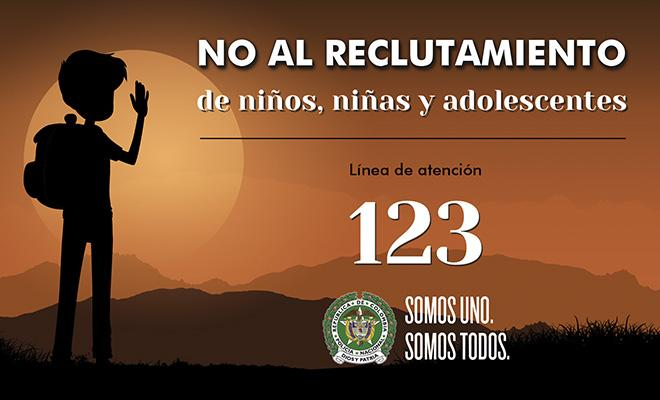
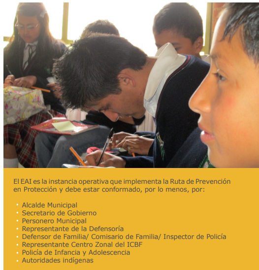

Pese a que en los Organismos Internacionales y nacionales no hay una definición legal de que se entiende por reclutamiento forzado, se podría
decir que este término hace alusión a una vulneración a derechos que se encuentran resguardados por la Constitución Política y el Código de Infancia y Adolescencia.
El reclutamiento forzado,
modalidad según la cual muchos niños eran secuestrados y golpeados hasta lograr su sumisión, fue durante mucho tiempo el arquetipo de reclutamiento de niños como soldados.
Los niños soldados de las FARC-EP Reclutamiento forzadoEste
fenómeno es uno de los acontecimientos más tristes que pueda registrar la humanidad y ha sido una constante en todos los países con conflictos armados, como Ruanda, Congo, Sierra Leona… Para vergüenza, Colombia
no es una excepción. En el documento técnico Lineamientos del Consejo Nacional de Reincorporación (CNR) para el Programa Integral Especial de Restitución de los Derechos de los Niños, Niñas y Adolescentes que salgan
de las FARC-EP, del programa Camino Diferencial de Vida, se reconoce que el conflicto colombiano no ha sido ajeno a esta situación. “El ingreso de menores de edad a los Grupos Armados Organizados al Margen de la
Ley (GAOML) es ciertamente un fenómeno multicausal. La Defensoría del Pueblo en un Informe del año 2006 menciona factores de índole social, familiar, económico, cultural y afectivo [sic] que inciden como factores
de vulnerabilidad para el reclutamiento de niños, niñas y adolescentes. Los contextos de privación económica, la falta de acceso a servicios de educación, salud, bienestar y recreación, así como la carencia de redes
afectivas y de protección, entre otras condiciones de vulnerabilidad, influyen de manera determinante en el ingreso de esta población a los grupos. También se encuentra el hecho de que algún o algunos de sus familiares
sean miembros del GAOML” .
En el marco de las conversaciones de La Habana, las delegaciones del Gobierno Nacional y las FARC-EP llegaron a un acuerdo sobre los niños soldados y su salida de los campamentos.
Los puntos centrales de tal negociación fueron dos. Respecto de los menores de 15 años se acordó que abandonarían los campamentos, para lo cual se programaría su entrega inmediata y, respecto de los mayores de 15
años, se llegó a un compromiso con la elaboración de una hoja de ruta para la salida de todos los demás menores de edad, así como la creación de un programa integral especial para su atención.Este acuerdo fue conocido
mediante Comunicado Conjunto No. 70, del 15 de mayo de 2016. Se presentaron demoras en la ejecución de las entregas y el país quedó en una alarmante espera para que se diera lugar la salida de niños menores de 15
años de los campamentos.Los Diálogos de Paz adelantados entre el Gobierno Nacional y las FARC-EP dieron finalmente vida al Acuerdo final para la terminación del conflicto y la construcción de una paz estable y duradera,
en el que se definió la protección integral de los derechos de los menores de edad vinculados al conflicto armado, como un propósito compartido, resultado de lo cual, acordaron medidas especiales para su protección,
disponiendo en el Numeral 3.2.2.5 la Reincorporación para los menores de edad que han salido de los campamentos de las FARC-EP, en los siguientes términos: Los menores de edad que hayan salido de los campamentos de las FARC-EP desde el inicio de las conversaciones de paz, así como los que salgan hasta la finalización del proceso de la dejación de armas, serán objeto de medidas de especial atención y protección que se discutirán en el Consejo Nacional de Reincorporación en el marco de la Comisión de Seguimiento, Impulso y Verificación de la Implementación del Acuerdo Final (CSIVI) y que incluirán los principios orientadores que serán de aplicación a los menores de edad y los lineamientos para el diseño del Programa Especial conforme a lo establecido en el Comunicado Conjunto No. 70 de fecha 15 de mayo de 2016 para garantizar la restitución de sus derechos con enfoque diferencial, priorizándose su acceso a la salud y a la educación. A estos menores de edad se les reconocerán todos los derechos, beneficios y prestaciones establecidos para las víctimas del conflicto, así como los derivados de su proceso de reincorporación en los términos contemplados en el Acuerdo Final y se priorizará su reagrupación familiar cuando ello sea posible, así como su ubicación definitiva en sus comunidades de origen o en otras de similares características, siempre teniendo en cuenta el interés superior del niño. El seguimiento a estos programas se efectuará por el Consejo Nacional de Reincorporación en articulación con las entidades del Estado competentes y con el apoyo de organizaciones sociales o especializadas encargadas de hacer la veeduría en los términos del Comunicado Conjunto No. 70. La elaboración del Programa Especial de Reincorporación para menores deberá realizarse por parte del Consejo Nacional de Reincorporación, con base en la propuesta presentada por parte de la mesa técnica creada mediante Comunicado Conjunto No. 70. Una vez aprobado el Programa, el Gobierno Nacional tramitará los ajustes normativos que sean necesarios para garantizar su implementación, siempre teniendo en cuenta el interés superior del niño y el Derecho Internacional Humanitario.El Programa deberá garantizar la reincorporación integral del menor y su acompañamiento psicosocial, con la veeduría de las organizaciones sociales o especializadas en los términos del Comunicado Conjunto No. 70, así como también su ubicación en lugares transitorios de acogida en municipios cercanos a las Zonas Veredales Transitorias de Normalización, garantizando el derecho a la información de todos los participantes, en especial a los niños, niñas y adolescentes.
La prevención del reclutamiento se define como el conjunto de planes, programas y proyectos que desarrolla el Estado, la sociedad y la familia para asegurar el ejercicio
y goce efectivo de los derechos de los niños, niñas y adolescentes y evitar que sean reclutados y/o utilizados por parte de grupos armados organizados
¿Qué es la prevención del reclutamiento de niños, niñas y adolescentes (NNA) por parte de grupos armados organizados al margen de la ley y grupos delictivos organizados?
a. Definición
La
prevención del reclutamiento se define como el conjunto de planes,
programas y proyectos que desarrolla el Estado, la sociedad y la familia para asegurar el ejercicio y goce efectivo de los derechos de los
niños, niñas y adolescentes y evitar que sean reclutados y/o utilizados por parte de grupos armados organizados al margen de la ley y grupos delictivos organizados.
b. Principios
La
prevención del reclutamiento y utilización de niños, niñas y adolescentes por parte de grupos armados organizados al margen de la ley y grupos delictivos organizados tiene arraigo en el enfoque de derechos de esta
población y su respectiva protección integral.
Este enfoque indica que las actuaciones del Estado, la sociedad y la familia deberán observar la prevención, protección, promoción, garantía, restablecimiento,
desarrollo y el goce efectivo de los derechos de los niños, las niñas y los adolescentes. En este orden, la prevención se inspira y debe ser desarrollada bajo una serie de principios orientadores que son
enunciados a continuación: Interés Superior del Niño, Prevalencia de Derechos, Ciclo de Vida, Corresponsabilidad y Participación.
c. Enfoque
El enfoque de Protección Integral, se entende como
el reconocimiento de niños y niñas como sujetos de derechos, la garantía y el cumplimiento de los mismos, la prevención de su amenaza o vulneración y la seguridad de su restablecimiento inmediato. De igual
forma, se resalta el Enfoque de Derechos, la Diversidad Étnica, el Enfoque Diferencial, la Perspectiva de Género y el Derecho de los niños, niñas y adolescentes a ser protegidos de su vinculación a grupos armados.

Actores
Niño/a en riesgo de reclutamiento:
Persona menor de 18 años de edad que se encuentra en situación de
inobservancia social, económica, política y cultural, cuyos derechos se
pueden
vulnerar por presencia y accionar de grupos armados organizados al margen de la ley y debilidad de respuesta del Estado, sociedad y familia.
Familia:
Es una unidad de supervivencia y de construcción
de solidaridades
que tiene la obligación de orientar, cuidar, acompañar y criar a los niños, niñas y adolescentes durante su proceso de formación. El ejercicio de la responsabilidad familiar en ningún caso puede
conllevar
violencia física, psicológica o actos que impidan el ejercicio de los derechos de los niños, niñas y adolescentes.
Sociedad:
Es el conjunto de individuos que interaccionan entre
sí y comparten
ciertos rasgos culturales esenciales. Como sociedad, tienen la obligación y la responsabilidad de tomar parte activa en el logro de la vigencia efectiva y garantia de los derechos de los niños,
las niñas y los adolescentes.
Estado:
El Estado es el contexto institucional en el desarrollo integral de los
niños, las niñas y los adolescentes. Es un fin esencial del Estado asegurar
las condiciones para el ejercicio de los derechos y prevenir su
amenaza o afectación a través del diseño y la ejecución de políticas
públicas sobre infancia y adolescencia.
Grupo Armado Organizado al Margen de la Ley y Grupo
Delictivo Organizado:
Grupo
estructurado de tres o más personas que exista durante cierto tiempo y actúe concertadamente con el propósito de cometer uno o más delitos graves o delitos tipificados en la Convención de las Naciones Unidas
contra la Delincuencia Organizada Transnacional, con miras a obtener directa o indirectamente, un beneficio económico u otro beneficio de orden material.
Factores de riesgo identificados que propician el reclutamiento.
•
Factores de Riesgo Individuales - Necesidad de protección y/o reconocimiento: cuando el entorno familiar no ofrece cuidado alguno o por el contrario, genera violencia.
- Desconocimiento,
ignorancia o falta de información, que
conlleva a que el NNA asuma como normales y legales ciertos
actos de violencia en contra suya.
- Presencia de imaginarios soportados en la búsqueda de poder
y riqueza
a través del uso de las armas o el desarrollo de actividades ilegales.
- Expulsión temprana del hogar. - Violencia sexual.
• Factores de riesgo Familiares - Antecedentes de violencia
intrafamiliar. - Antecedentes de violencia sexual. - Trabajo Infantil. - Pertenencia de algún miembro de la familia a un grupo armado
ilegal.
• Factores de riesgo sociales - Ausencia
de redes u organizaciones de protección institucional o comunitaria.
- Ausencia de redes de apoyo productivo para las familias de los
NNA víctimas (desempleo, pobreza extrema y falta de oportunidades).
• Factores de riesgo estatales -
Insuficiente cobertura de oferta en educación y/o baja calidad o falta de docentes.
- Inoperancia de las autoridades locales/municipales por desconocimiento y/o miedo.
- Ausencia de autoridades en lo
local y lo municipal con capacidad de atención a NNA víctimas o en riesgo o para el
desarrollo de estrategias de prevención del reclutamiento y la
utilización.
- Necesidades básicas insatisfechas y ausencia
o falta de cobertura de servicios públicos esenciales.
• Factores de riesgo asociados al conflicto directamente - Presencia de actores armados ilegales (pueden o no tener control territorial
de la zona).
- Desarrollo de actividades económicas ilícitas (cultivos ilícitos,
minería ilegal o artesanal, contrabando, etc.).
- Desplazamiento forzado.

En que consiste la Ruta de Atención.
La Ruta de Prevención en Protección se aplica cuando existen eventos objetivos, concretos y específicos que constituyen una amenaza individualizada y personalizada
al derecho de protección contra el reclutamiento y utilización de un niño, niña o adolescente o un grupo de niños y niñas.
En estos casos se requiere desarrollar una ACCIÓN INMEDIATA con el fin de proteger
los derechos de los niños, niñas y adolescentes. Frente a este nivel de amenaza todas las autoridades públicas y competentes están llamadas a tomar decisiones que permitan la ejecución de acciones inmediatas
para garantizar los
derechos del niño, niña o adolescente; como por ejemplo, el traslado a un lugar donde las instituciones competentes puedan asegurar su derecho a ser protegido contra el reclutamiento
y la utilización.
Esta acción inmediata no puede ser desarrollada por una única institución, por el contrario, necesita la concurrencia de las entidades con competencia en el deber de protección de la infancia
y la adolescencia. Por lo tanto, demanda una acción contingente desarrollada por un cuerpo colegiado conformado por las autoridades responsables y competentes en el territorio que se denomina en esta guía:
Equipo de Acción Inmediata.
El Equipo de Acción Inmediata (EAI) está conformado tanto por las autoridades públicas que están obligadas a actuar oportunamente para garantizar los derechos de los niños, niñas
y adolescentes; así como de las autoridades competentes encargadas de tomar las medidas administrativas para garantizar o restablecer los
derechos de los niños, niñas y adolescentes amenazados y se encarga
de reaccionar de manera oportuna frente a casos de amenazas concretas contra niños, niñas y adolescentes.
En este sentido, el Equipo de Acción Inmediata (EAI) se configura como la instancia operativa que implementa
la Ruta de Prevención en Protección contemplada por el CONPES 3673 de 20107 y cuyo desarrollo propone la Comisión Intersectorial en esta Cartilla.
Atendiendo la presencia de las entidades del nivel
nacional en los municipios y territorios intervenidos, la Comisión Intersectorial propone que los EAI que se constituyan en el nivel local, estén conformados mínimamente por :
Alcalde Municipal
Secretario de Gobierno
Personero Municipal
Representante de la Defensoría
Defensor de Familia/ Comisario de Familia/ Inspector de Policía
Representante Centro Zonal y oficinas del ICBF
Policía de Infancia y Adolescencia
Autoridades Indígenas según corresponda.
Cabe
anotar que la implementación efectiva de la ruta requiere el concurso de las familias, líderes comunitarios, organizaciones sociales y organizaciones de cooperación internacional, como lo establece el CONPES
3673. Vale la pena recordar que la ruta debe, en lo posible, vincular los tres entornos protectores
dependiendo la disponibilidad de recursos con los que se cuente en el orden comunitario, familiar, educativo y
social. Esto quiere decir, que aunque la institucionalidad es el primer respondiente ante este tipo de casos, redes comunitarias y sociales fortalecidas y atentas a desarrollar acciones contingentes de protección, garantizan
una respuesta más oportuna e idónea.
Una vez se tiene conocimiento del hecho por parte de cualquier autoridad o miembro de la comunidad es necesario notificar el caso a la autoridad competente en materia
de infancia y adolescencia, o sea al Defensor(a) de Familia, Comisario(a) de Familia o Inspector(a) de policía para que éste sirva de dinamizador
de la ruta de prevención en protección con el concurso de
las autoridades que integran el EAI, en el marco de las competencias que le son propias a cada una.
Las medidas de protección contra el reclutamiento y utilización pueden implicar el traslado o movilización del
niño, niña o adolescente. En algunos casos este traslado involucra exclusivamente al menor de edad amenazado, en otras ocasiones involucra a otros menores de edad, por ejemplo, cuando se trata de un
grupo
de hermanos y en otras ocasiones el traslado involucra la red familiar, ya sean los padres o familiares de los niños y niñas o en ocasiones los adultos cuidadores de los niños y niñas.
Al tiempo que
se produce el traslado del niño, niña y/o adolescente será necesario tomar medidas de restablecimiento de los derechos que se hubieran visto mermados en la acción de proteger el derecho del niño o
niña a ser protegido contra el reclutamiento y utilización11.En el caso del traslado del
grupo familiar, de los padres o cuidadores, la autoridad pública debe evaluar si se remite a la familia, padres
o cuidadores a la Ruta de Atención a Víctimas por el hecho victimizante de desplazamiento por amenaza de reclutamiento.
De acuerdo con el artículo 99 de la Ley 1098 de 2006, en el caso del niño,
niña o grupo de niños que se traslada o moviliza por la amenaza de reclutamiento sin su red familiar, se debe acudir a la Personería del municipio y solicitar la carta que lo acredite como persona
en situación de desplazamiento por causa de reclutamiento forzado. Este acreditación le permite ser beneficiario de la ayuda humanitaria de emergencia y de las demás acciones establecidas por la Ley
a las que tiene derecho cualquier persona en situación de desplazamiento forzado.
Por otra parte, el Equipo de Acción Inmediata con el concurso de la autoridad pública local y en coordinación con la
Red Institucional local, debe desplegar con recursos propios las acciones necesarias para conjurar la amenaza, sacar al niño, niña o grupo de niño y niñas del lugar de riesgo, trasladarlo a en
un
lugar físico seguro y ponerlo a disposición del ICBF.
Es posible, sin embargo, que la amenaza pueda ser superada en el sitio donde ocurran los hechos, sin que tenga que producirse el traslado.
